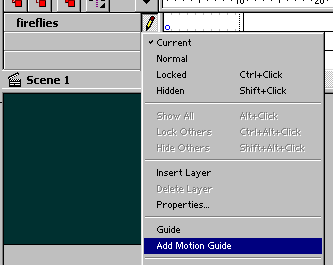
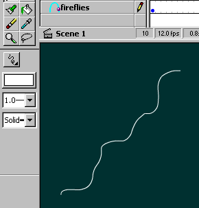
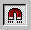
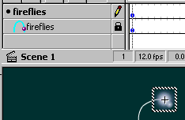
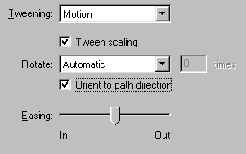

Creating "Snowflakes"


 Downloadable FLA
Downloadable FLA
The snowflakes / fireflies i've made on my site, has become extremely popular. So popular, that i'll now give this tutorial, to exploit my secret. I created them in the first place only because i felt they gave something to the "organic" feel of my site.
The snowflake effect is easiest if you use the "Load Movie" command to load the .swf file we create here:
Step 1. Create a snowflake, or a firefly, or rain, or whatever you wan't on your page. This is NOT done in a pixelbased program like Adobe Photoshop, it's done directly in Flash. See Advanced Gradients for more info.
Step 2. Insert this symbol in a keyframe. Click "Add motion guide" on the layer:

Step 3. The motion guide specifies where the line the snowflake follows as it falls (or the pattern in which fireflies fly...). Draw this line using the pencil tool.

Step 4. Make sure the "Snap" feature is checked.

Step 5. Move the snowflake (or the firefly) close to where you wan't the snowflake to start falling. When you're close enough, it "snaps" to the line.

Step 6. Make another keyframe by pressing F6 some keyframes away from the first. Now move the snowflake to the end of the motion guide, so it snaps there too.
Step 7. Click properties for the frames between the first and the last keyframe. Select motion tweening. Now the snowflake falls.

Step 7. Repeat this proces until you feel you have enough snowflakes to support your purpose (Christmas card maybe? Or fireflies...).
That's it. Time to play "Winter wonderland"...